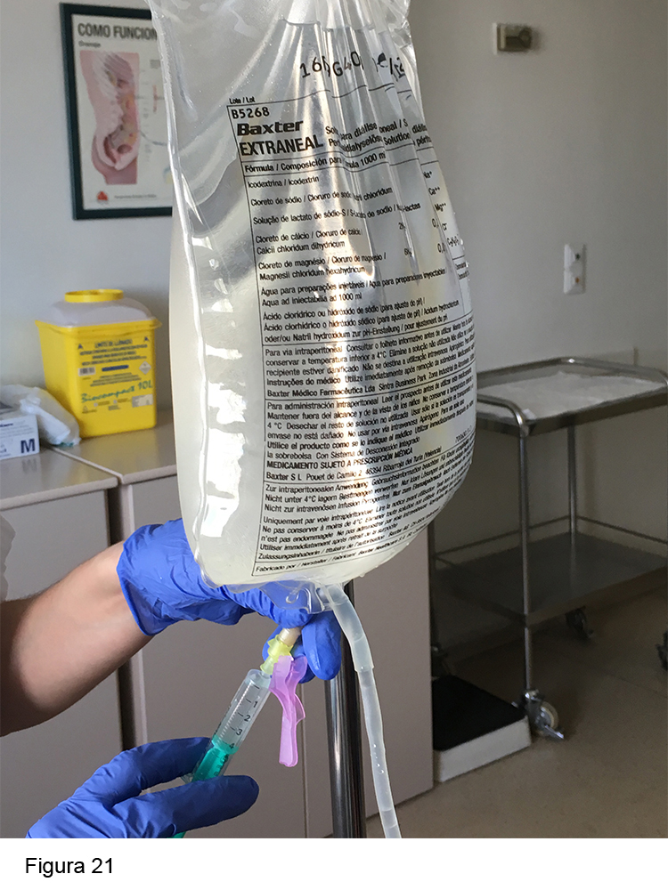

<div class="pages">
  <div data-page="projects" class="page no-toolbar no-navbar">
    <div class="page-content">
    
     <div class="navbarpages">
       <div class="navbar_home_link"><a href="toogle.html"></a></div>
       <div class="navbar_page_center"><b>Especialidades</b></div>
       <div class="menu_open_icon_white"><a href="#" class="open-panel"></a></div>
     </div>
     <div id="pages_maincontent">

          <h2 class="page_subtitle">Diálisis Peritoneal - Peritonitis </h2>
          <p><b>Autor/a:</b> Maite Rivera y Cristina Campillo. Servicio de Nefrología - Hospital Ramón y Cajal, Madrid</p>
          <div class="page_single">         
              <div class="buttons-row">
                    <a href="#tab3" class="tab-link active button">Información</a>
                    <a href="#tab4" class="tab-link button">Patogenia</a>
                    <a href="#tab5" class="tab-link button">Etiología</a>
                    <a href="#tab6" class="tab-link button">Diagnóstico</a>
              </div>
              <br />
              <div class="buttons-row">
                    <a href="#tab7" class="tab-link button">Tratamiento</a>
                    <a href="#tab8" class="tab-link button">Casos especiales</a>
                    <a href="#tab9" class="tab-link button">Profilaxis</a>
                    <a href="#tab10" class="tab-link button">Pronóstico</a>
              </div>
              
              <div class="tabs-simple">
                    <div class="tabs">
                        <div id="tab3" class="tab active">
                              <br />
                              <h4>Información</h4>
                              <p class="justify">
                                  Es la complicación más típica de la DP. En general la infección está confinada a la cavidad peritoneal y rara vez es sistémica. Puede causar gran morbimortalidad. Es responsable de al menos el 20% de los fracasos de la técnica (y paso a HD) y tiene un 2-6% de mortalidad. Constituye el primer motivo de ingreso en pacientes en DP, provoca cambios en la dinámica de la membrana peritoneal y puede ocasionar la retirada del catéter. <br /><br />
	Cada centro debe llevar un registro de la tasa de peritonitis. Una tasa de peritonitis adecuada debe estar en torno a 1 episodio cada 18 meses de tratamiento (< 0,67 episodios/año). Además, se debe llevar un registro de los gérmenes locales para ajustar el tratamiento a la flora y sensibilidad antibiótica local.
 <br />
                              </p>   
                      </div>
                      <div id="tab4" class="tab">
                              <br />
                              <h4>Patogenia</h4>
                              <p class="justify">
                                  Los gérmenes pueden llegar al peritoneo por varias vías, la más común es la <b>intraluminal</b> (por mala técnica del paciente), aunque también por vía <b>periluminal</b> (asociada a tunelitis, infección del OS o a biofilm del catéter por peritonitis de repetición), <b>transmural</b> (de origen intestinal por estreñimiento, tras procedimientos como colonoscopia o patología gastroentérica), <b>hematógena</b> (en el seno de una sepsis o bacteriemias asociadas a infección de catéteres o extracciones dentarias) o <b>transvaginal</b> (exploraciones ginecológicas sin profilaxis antibiótica o antifúngica) <br /><br />
                                  
                      </div> 
                      <div id="tab5" class="tab">
                              <br />
                              <h4>Etiología</h4>
                              <p class="justify">
                                  Con técnicas de cultivo adecuadas se puede identificar el germen en más del 90% de los casos. Generalmente se trata de bacterias GRAM POSITIVAS en un 70% de los casos (Staphylococcus. epidermidis, S. aureus, estreptococo, etc.). Menos frecuente  GRAM NEGATIVAS (Pseudomona, Klebsiella, Enterobacter, etc.). También puede ser producida por hongos (Cándida), Mycobacterium Tuberculosis, etc. incluso virus. El paciente suele consultar por teléfono o acudir  al Hospital por dolor abdominal asociado a turbidez del líquido del último cambio de diálisis.
                              </p>
                      </div> 
                      <div id="tab6" class="tab">
                              <br />
                              <h4>Diagnóstico</h4>
                              <p class="justify">
                                  Deben estar presentes al menos 2 de las 3 condiciones siguientes:<br /><br />

                                    1. Signos y síntomas de inflamación peritoneal (dolor, peritonismo, fiebre, náuseas y vómitos...) Figura 18<br /><br />
                                    2. Fluido peritoneal turbio  con aumento del nº de leucocitos (> 100/ml) y predominio de neutrófilos (> 50%). Normalmente el contaje de células es < 50 células/ml y a menudo &lt; 10 células/ml.<br /><br />
                                    3. Demostración de bacterias en el efluente por GRAM o CULTIVO.<br /><br />
                                    
                                    <b>Reconocimiento de peritonitis por el paciente</b><br /><br />
                                    
                                    El paciente ha de estar entrenado para reconocer los síntomas y signos de peritonitis y acudir inmediatamente al hospital para un adecuado diagnóstico e inicio rápido de tratamiento. Esto es clave para el pronóstico del peritoneo y del paciente. <br /><br />
                                        El dolor abdominal de variada intensidad con o sin fiebre suele ser el síntoma fundamental, aunque puede haber otros (Figura 18)<br /><br /> La turbidez del líquido de drenaje peritoneal es el signo patognomónico de la peritonitis. La mayoría de las veces la turbidez es evidente. Ante dudas sobre la transparencia del líquido de la bolsa de drenaje, pondrá un folio con un texto en una superficie plana debajo de la bolsa e intentará leer las letras del texto a través de ella. Debe leerse nítidamente, si no, se deberá a que el líquido es turbio y puede tratarse de una peritonitis (Figura 19A) (Figura 19B)<br /><br />  Por último, la disminución de UF en el último intercambio puede ser un signo precoz de peritonitis.<br /><br />
                                    
                                    
                                    <b>Obtención de muestras de fluido peritoneal</b><br /><br />
                                    
                                    Hay que obtener muestras para hemograma y cultivo de líquido peritoneal (Gram y cultivo). Si el paciente trae la bolsa del último cambio, se tomarán las muestras de esta. Si no la trae o es un paciente en cicladora, se realizará un intercambio y, tras AL MENOS 2 h de permanencia, se sacará la analítica de la bolsa de ese intercambio. En este último caso,  se hará además un contaje de leucocitos con tira reactiva tipo Combur®. En caso de que sea negativo, es muy probable  que  el hemograma  refleje < 100 leucocitos. En cualquier caso, el hemograma y los cultivos son obligatorios. Se extraerán unos 30 ml de la bolsa sospechosa de infección, que hay que enviar a la mayor brevedad posible al laboratorio (Figura 20).<br /><br />
                                    <br />
                                                        
									1. <u>Técnica de obtención de muestra para hemograma (10 ml):</u><br /><br />
                                          
                                    - Desconectar la bolsa de drenaje llena.<br />
                                    - Invertirla varias veces para mezclar contenido.<br />
                                    - Insertar una aguja con jeringa estéril a través del tapón  correspondiente de la bolsa.<br />
                                    - Tomar muestra y ponerla en tubo con EDTA para hemograma.<br /><br />
                                    
                                    2. <u>Técnica para obtención de muestras para cultivo</u><br /><br /> 
                                    
                                    Se enviará una muestra de líquido peritoneal a Microbiología en tubo estéril para Gram y cultivo (10 ml) y además otras  2 muestras, de unos 5 ml cada una, en botes de hemocultivo para cultivo de larga incubación (aerobios y anaerobios). 

                              </p>
                      </div> 
                   <div id="tab7" class="tab">
                              <br />
                              <h4>Tratamiento</h4>
                              <p class="justify">
                                  La peritonitis es una urgencia, por lo que de inmediato se iniciará tratamiento empírico. <br />
                                    El protocolo actualmente recomendado por las guías incluye un antibiótico para Gram(+) y otro para Gram(-), ambos administrados por vía intraperitoneal (en la bolsa de infusión). Hay que ser muy activos en el tratamiento de la peritonitis, citando al enfermo cada 48 h para contaje celular y cultivos peritoneales bajo tratamiento y para modificar el antibiótico en función de los resultados de los cultivos. La vía intraperitoneal (Figura 21) es de elección para el tratamiento, salvo que exista sepsis (vía IV).<br /><br /><br />
                                
                                - Vancomicina (30 mg/kg o 2 g) o cefazolina (1 g) +<br /><br />
                                - Tobramicina (150 mg de carga + 16 mg en cada intercambio) o<br /><br />
                                - Ceftazidima (1 g)<br /><br />
                                
                                    En el caso de un paciente en cicladora, lo más práctico es pasarle a manual. Si no fuera posible, la dosis discontinua de antibióticos es: <br /><br />
                                
                                - Tobramicina 40 mg IP cada 24 h +<br /><br />
                                - Vancomicina 2 g IP (1 sola dosis) en el cambio más largo (en general, diurno)<br /><br />
                                
                                    Si hay sospecha de peritonitis fúngica (ejemplo: exploración ginecológica previa), el paciente quedará ingresado y se pautará, además de lo anterior: <br /><br />
                                
                                - Fluconazol 100 mg/día o 200 mg/48 h IP<br /><br />
                                
                                    Además de los antibióticos, en una peritonitis se prescribirá:<br /><br />
                                
                                - Heparina sódica: para evitar la formación de coágulos de fibrina, la captura de los microorganismos y prevenir la formación de adherencias. Dosis: 1.000-2.000 U (1-2 ml de HepNa al 1%) por cada bolsa de 2 l de líquido, según el grado de turbidez de la bolsa drenada. <br /><br />
                                - Bolsas de diálisis peritoneal con mayor contenido de glucosa en caso de disminución de la ultrafiltración. A veces hay que aumentar el nº de cambios (ejemplo: de 3 a 4 cambios). En general, la UF se mantiene con icodextrina, por lo que es un acierto añadir esta bolsa al tratamiento (paciente dializado con Baxter®) si el paciente no la llevaba. La icodextrina es compatible con la mayoría de los antibióticos. Si el paciente se dializaba con bolsas de Fresenius®, existe un conector especial para utilizar bolsas de icodextrina en estos pacientes.<br /><br />
                                - Decidir ingreso: El tratamiento de las peritonitis es AMBULANTE en la mayoría de los casos. Los criterios de ingreso son: shock, sepsis, vómitos copiosos, incapacidad del paciente de ponerse el antibiótico en casa (ancianos, primer episodio), sospecha de peritonitis fúngica y dolor abdominal importante (gran irritación peritoneal).<br /><br />
                                - Revisiones posteriores: El paciente acudirá a la Unidad de DP el primer día lectivo y posteriormente cada 48-72 h. Las dosis de diversos antibióticos se presentan en la (Figura 22).<br /><br /> Se ajustará el tratamiento antibiótico a los resultados microbiológicos (Figura 23A) (Figura 23B).<br /><br /><br /><br />
                              </p>
                      </div> 
                      <div id="tab8" class="tab">
                              <br />
                              <h4>Casos especiales</h4>
                              <p class="justify">
                                  <b>Peritonitis con cultivo negativo</b><br />

                                    Excepcionalmente, en peritonitis infecciosa bacteriana, no crecerá ningún germen en cultivo debido a procesamiento inadecuado de la muestra, uso reciente de antibióticos o extracción de cultivo en bolsa de drenaje con corta permanencia (menos de 2 h). También puede deberse a inflamación peritoneal no infecciosa.<br /><br />
                                    
                                    
                                    <b>Peritonitis eosinofílica</b><br />
                                    
                                    Se define  por la presencia de > 100 leucocitos/mm3 en líquido peritoneal, siendo eosinófilos > 10% o > 40/mm3. Es una peritonitis con cultivo negativo. Se distinguen 2 tipos: <br />
                              </p>
                              <blockquote class="sin">
                                    a)	<u>Idiopática</u>, que suele ocurrir dentro de los primeros 3 meses de iniciación de la técnica y se atribuye a la hipersensibilidad a los materiales de DP (catéter o soluciones), desinfectantes (clorhexidina), fármacos (vancomicina, icodextrina) o aire introducido en la cavidad peritoneal en el momento de la colocación del catéter.<br /><br />
                                    b)	<u>Infecciosa</u>, debido a infecciones por hongos o, con menor frecuencia, por bacterias, virus o parásitos. <br /><br />
                                    
                                        La peritonitis eosinofílica idiopática suele ser asintomática o poco sintomática y en general se resuelve espontáneamente en pocos meses. En raras ocasiones es necesario el tratamiento con corticoides orales.<br /><br />
                             </blockquote>
                             <p class="justify">       
                                    <b>Peritonitis resistentes</b><br />
                                    
                                    Se trata de peritonitis que no responden al tratamiento  adecuado (peritonitis refractarias) o que recurren al suspender éste (peritonitis recurrentes). A menudo obligan a la retirada del catéter.<br />
                             </p>
                             <blockquote class="sin">     
                                    a)	<u>Peritonitis refractarias</u>. Se caracterizan por la ausencia de mejoría tras tratamiento adecuado después de una semana. Las causas más frecuentes son: tunelitis, absceso intraabdominal, patología ginecológica o intestinal, peritonitis fúngica o tuberculosa, mala elección del antibiótico o bacterias lentas crecedoras.<br /><br />
                                    b)	<u>Peritonitis recurrentes</u>. Se dividen en recidivas o reinfección. Si la peritonitis recurre con la misma bacteria se considera una recidiva y si es con una distinta se considera reinfección. La recidiva se suele asociar a presencia de biofilm en el catéter que impide la penetración del antibiótico. Las peritonitis recurrentes se tratarán con una nueva tanda de antibióticos. <br /><br />
                             </blockquote>  
                            <p class="justify">        
                                    <b>Peritonitis fúngica</b><br />
                                    
                                    Las peritonitis por hongos son una entidad grave, asociada a morbilidad (daño permanente del peritoneo) y  mortalidad. Las causas más frecuentes son: antibioterapia previa de amplio espectro, exploración ginecológica sin profilaxis fúngica y perforación intestinal. <br />
                                        El tratamiento se hará con fluconazol 100-200 mg/día IV o VO junto a la retirada inmediata del catéter. El fluconazol se mantendrá 2-3 semanas tras la retirada del catéter.<br /><br />
                                    
                                    
                                    <b>Peritonitis polimicrobiana</b><br />
                                    
                                    Se define por la presencia en cultivo de más de un germen, con frecuencia Gram(+) y Gram(-), aerobios o anaerobios u hongos. Suelen ser secundarias a perforación de víscera hueca abdominal (diverticulitis, apendicitis, colecistitis...). <br />
                                        Requiere la realización de pruebas de imagen (TAC abdominal) para llegar al diagnóstico. <br />
                                        El tratamiento antibiótico será de amplio espectro, ajustado a la patología a tratar y de 3 semanas de duración. Junto a los antibióticos habituales se prescribirá clindamicina o metronidazol IV para las bacterias anaerobias o antifúngicos si hay hongos.<br />
                                        Rara vez las peritonitis polimicrobianas se deben a mala higiene o contaminación de la muestra en el laboratorio. El pronóstico en estos casos es mejor.

                              </p>
                      </div> 
                    <div id="tab9" class="tab">
                        <br />
                        <h4>Profilaxis</h4>
                        <p class="justify">
                            Prevención de peritonitis en procedimientos invasivos<br /><br />

                            - Endoscopias digestivas (tracto superior e inferior): Las guías internacionales de DP (ISPD) recomiendan el vaciado de la cavidad peritoneal y la administración de ampicilina  + aminoglucósido con/sin metronidazol IV debido al riesgo real de presentar una peritonitis posterior  por enterobacterias.<br /><br />
                            
                            - Manipulación-extracciones dentales: profilaxis antibiótica oral el día previo (una dosis) y 2 dosis posterior si no hay infección en cavidad oral (amoxicilina-clavulánico 500 mg o clindamicina 600 mg) <br /><br />
                            
                            - Exploración ginecológica-ecografía vaginal: fluconazol 100 mg el día previo a la visita al ginecólogo.
                        </p>
	                </div> 
                    <div id="tab10" class="tab">
                        <br />
                        <h4>Pronóstico</h4>
                        <p class="justify">
                            La mayoría de las peritonitis (75%) evolucionan favorablemente con tratamiento adecuado. Sin embargo, entre un 10-20% evolucionan mal, ocasionando la retirada del catéter, transferencia a HD, daño permanente del peritoneo e incluso compromiso para la vida del paciente. Son peritonitis de mal pronóstico:<br /><br />

                            - Peritonitis fúngica<br />
                            - Peritontis por micobacterias<br />
                            - Peritonitis por Pseudomonas<br />
                            - Peritonitis por S. aureus (biofilm)<br />
                            - Tunelitis asociada<br />
                            - Peritonitis polimicrobiana por perforación abdominal
                        </p>
	                </div> 
              </div>        
          </div>     
      </div>  
    </div>
  </div>
</div>